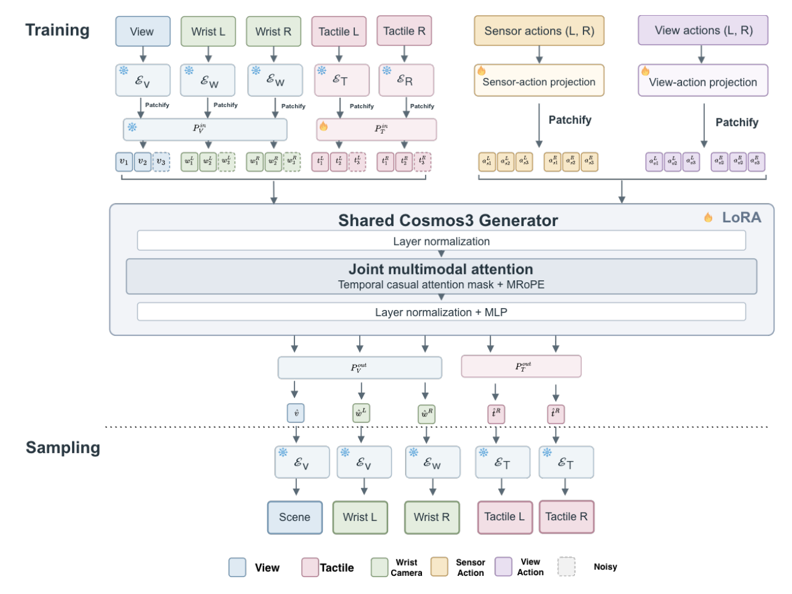
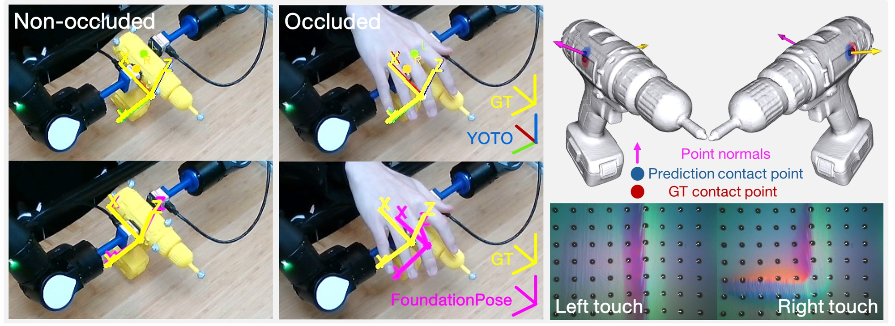

|
Haonan Chen I am a postdoctoral researcher in the Embodied Minds Lab at Harvard, working with Yilun Du. I also collaborate closely with Jiajun Wu at Stanford's Vision and Learning Lab and with Ted Adelson at MIT. I received my Ph.D. from the University of Illinois Urbana-Champaign, where I was advised by Katie Driggs-Campbell and collaborated closely with Yunzhu Li. My research focuses on multi-modal action composition — building generalizable robot behaviors by composing specialized models across sensory modalities and time scales.
I'm always excited to explore new collaborations in robotics and machine learning! If you're interested, please drop me an email. I'd love to chat! haonan_chen [at] seas (dot) harvard (dot) edu / haonan [at] cs (dot) stanford (dot) edu |

News
|
Publications |
|
|
Learning to Be Different: Component Specialization for Compositional Diffusion Policies
Alec Laprevotte, Haonan Chen, Xiaoshen Han, Yilun Du 2026 Conference on Robot Learning, [Project] [Paper] [Code] [BibTeX] |
|
|
Dream What I Can: Sparse Visual Planning for Long-Horizon Robot Manipulation
Chongkai Gao, Wenlong Huang, Haonan Chen, Lin Shao, Yilun Du, Jiajun Wu, Ruohan Zhang, Li Fei-Fei 2026 Preprint, [Project] [Paper] [Code] [BibTeX] |
|
 |
ACTS: Learning Visuo-Tactile World Models from Human Physical Interaction
Yuxiang Ma, Weihan Xu, Pengfei Ye, Anna Mei, Yuxin Ray Song, Tingle Li, Haonan Chen, Edward H. Adelson 2026 Preprint, [Project] [Paper] [BibTeX] |
|
|
VisualForce: Robot Learning with Visual Predicted Force
Haonan Chen*, Feiyang Wu*, Yuxiang Ma, Mustafa Mete, Pengfei Ye, Junxuan Shen, Cheng Zhu, Aurora Ruggeri, Kelvin Cheung, Jiayuan Mao, Edward Adelson, Jiajun Wu, Robert D. Howe, Yilun Du * Equal contribution 2026 Preprint, [Project] [Paper] [Code] [BibTeX] |
|
|
GlowTact: Simple and Compact Vision-Based Tactile Sensing with High Sensitivity and Spatial Resolution
Yuxiang Ma*, Megha Tippur*, Pengfei Ye, Sandra Q. Liu, Haonan Chen, Francis Richard Cottrell, Edward Adelson Humanoids 2026, [Project] [Paper] [BibTeX] |
|
|
ARGUS: Aligning Robot Scene Geometry Under Shifting Views with Large 3D Vision Models
Rishik Sathua, Haonan Chen, Katherine Driggs-Campbell 2026 Preprint, [Project] [Paper] [BibTeX] |
|
|
Masked Visual Actions for Unified World Modeling
Hadi Alzayer, Wenlong Huang, Haonan Chen, Christopher Luey, Lvmin Zhang, Maneesh Agrawala, Gordon Wetzstein, Li Fei-Fei, Yilun Du, Jiajun Wu, Jia-Bin Huang NeurIPS 2026, [Project] [Paper] [Code] [BibTeX] |
|
|
DriftWorld: Fast World Modeling through Drifting
Susie Lu, Haonan Chen, Weirui Ye, Yilun Du 2026 Preprint, [Project] [Paper] [Code] [BibTeX] |
|
|
B-spline Policy: Accelerating Manipulation Policies via B-spline Action Representations
Xiaoshen Han*, Haoyu Xiong*, Haonan Chen, Chaoqi Liu, Antonio Torralba, Yuke Zhu, Yilun Du * Equal contribution 2026 Preprint, [Project] [Paper] [Code] [BibTeX] |
|
 |
You Only Touch Once: 6-DoF Object Pose Estimation from Single Tactile Contact
Pengfei Ye, Yuxiang Ma, Haonan Chen, Guangming Wang, Yixiong Jing, Brian Sheil, Yilun Du, Edward Adelson 2026 Preprint, [Paper] [BibTeX] |
|
|
MemoBench: Benchmarking World Modeling in Dynamically Changing Environments
Haoyu Chen, Kaichen Zhou, Hang Hua, Kaile Zhang, Jingwen Qian, Wufei Ma, Haonan Chen, Chunjiang Liu, Yizhou Zhao, Xiaoyuan Wang, Weiyue Li, Alan Yuille, Paul Pu Liang, Yilun Du 2026 European Conference on Computer Vision, [Project] [Paper] [Code] [BibTeX] |
|
|
CoStream: Composing Simple Behaviors for Generalizable Complex Manipulation
Haonan Chen*, Yuxiang Ma*, Stephen Tian, Xiaoshen Han, Wenlong Huang, Feiyang Wu, Yunzhu Li, Jiajun Wu, Edward H. Adelson, Yilun Du * Equal contribution 2026 Conference on Robot Learning, [Project] [Paper] [BibTeX] |
|
|
OAT: Ordered Action Tokenization
Chaoqi Liu, Xiaoshen Han, Jiawei Gao, Yue Zhao, Haonan Chen, Yilun Du 2026 Robotics: Science and Systems, [Project] [Paper] [Code] [Blog] [BibTeX] Finalist - Best/Outstanding Paper Awards Media Coverage: [MarkTechPost] |
|
|
IMPACT: Learning Internal-Model Predictive Control for Forceful Robotic Manipulation
Jiawei Gao, Chaoqi Liu, Peilin Wu, Haonan Chen, Yilun Du 2026 Preprint, [Project] [Paper] [Code] [Video] [BibTeX] |
|
|
SIMPACT: Simulation-Enabled Action Planning using Vision-Language Models
Haowen Liu*, Shaoxiong Yao*, Haonan Chen, Jiawei Gao, Jiayuan Mao, Jia-Bin Huang, Yilun Du * Equal contribution 2026 IEEE/CVF Conference on Computer Vision and Pattern Recognition, [Project] [Paper] [BibTeX] |
|
|
Gotta Scoop ’Em All: Sim-and-Real Co-Training of Graph-based Neural Dynamics for Long-Horizon Scooping
Kaiwen Hong, Haonan Chen*, Jiaming Xu*, Runxuan Wang*, Kaylan Wang, Mingtong Zhang, Shuijing Liu, Yifan Zhu, Yunzhu Li, Katherine Driggs-Campbell * Equal contribution 2026 IEEE International Conference on Robotics and Automation, [Project] [Paper] [BibTeX] |
|
|
Multi-Modal Manipulation via Multi-Modal Policy Consensus
Haonan Chen, Jiaming Xu*, Hongyu Chen*, Kaiwen Hong, Binghao Huang, Chaoqi Liu, Jiayuan Mao, Yunzhu Li, Yilun Du+, Katherine Driggs-Campbell+ * Equal contribution; + Equal advising 2026 IEEE International Conference on Robotics and Automation, [Project] [Paper] [Code] [Dataset] [Video] [Audio] [Blog] [Deepwiki] [BibTeX] Best Paper Award at CVPR 2026 Workshop on Multi-Sensory Modeling for Embodied Intelligence [Link] Media Coverage: Featured in Video Friday on [IEEE Spectrum] |
|
|
Flexible Multitask Learning with Factorized Diffusion Policy
Chaoqi Liu, Haonan Chen, Sigmund H. Høeg*, Shaoxiong Yao*, Yunzhu Li, Kris Hauser, Yilun Du * Equal contribution 2026 IEEE Robotics and Automation Letters, [Project] [Paper] |
|
|
Tool-as-Interface: Learning Robot Policies from Observing Human Tool Use
Haonan Chen, Cheng Zhu, Shuijing Liu, Yunzhu Li, Katherine Driggs-Campbell 2025 Conference on Robot Learning, [Project] [Paper] [Code] Best Paper Award at ICRA 2025 Workshop on Foundation Models and Neuro-Symbolic AI for Robotics [Link] Best Presentation Award at CSL Student Conference 2025 [Link] Media Coverage: Featured in Video Friday on [IEEE Spectrum] Media Coverage: [The Grainger College of Engineering], [TechXplore], [Hackster.io] |

|
Towards Uncertainty Unification: A Case Study for Preference Learning
Shaoting Peng, Haonan Chen, Katherine Driggs-Campbell 2025 Robotics: Science and Systems, [Project] [Paper] [Code] [Video] Best Paper Award at ICRA 2026 Workshop on Uncertainty in Open-World Robotics |
|
|
Learning Coordinated Bimanual Manipulation Policies using State Diffusion and Inverse Dynamics Models
Haonan Chen, Jiaming Xu*, Lily Sheng*, Tianchen Ji, Shuijing Liu, Yunzhu Li, Katherine Driggs-Campbell * Equal contribution 2025 IEEE International Conference on Robotics and Automation, [Project] [Paper] |

|
Cooperative Advisory Residual Policies for Congestion Mitigation
Aamir Hasan, Neeloy Chakraborty, Haonan Chen, Jung-Hoon Cho, Cathy Wu, Katherine Driggs-Campbell 2024 ACM Journal on Autonomous Transportation Systems, [Paper] |

|
Lessons in Cooperation: A Qualitative Analysis of Driver Sentiments towards real-time Advisory Systems through a Focus Group User Study
Aamir Hasan, Neeloy Chakraborty, Haonan Chen, Jung-Hoon Cho, Cathy Wu, Katherine Driggs-Campbell 2024 IEEE Intelligent Transportation Systems Magazine, [Paper] |
|
|
Predicting Object Interactions with Behavior Primitives: An Application in Stowing Tasks
Haonan Chen, Yilong Niu*, Kaiwen Hong*, Shuijing Liu, Yiqing Wang, Yunzhu Li, Katherine Driggs-Campbell * Equal contribution 2023 Conference on Robot Learning, [Project] [Paper] Finalist - Best Paper/Best Student Paper Awards |

|
Towards Safety of Multi-Level Human-Robot Interaction in Industrial Tasks
Zhe Huang, Yeji Mun, Haonan Chen, Yiqing Xie, Yilong Niu, Xiang Li, Ninghan Zhong, Haoyuan You, Daniel L. McPherson, Katherine Driggs-Campbell 2023 IEEE International Conference on Automation Science and Engineering (Special Session), [Paper] |

|
Learning Task Skills and Goals Simultaneously from Physical Interaction
Haonan Chen*, Yeji Mun*, Zhe Huang, Yilong Niu, Yiqing Xie, D. Livingston McPherson, Katherine Driggs-Campbell * Equal contribution 2023 IEEE International Conference on Automation Science and Engineering (Special Session), [Paper] |

|
PeRP: Personalized Residual Policies For Congestion Mitigation Through Co-operative Advisory Systems
Aamir Hasan, Neeloy Chakraborty*, Haonan Chen*, Jung-Hoon Cho, Cathy Wu, Katherine Driggs-Campbell * Equal contribution 2023 IEEE International Conference on Intelligent Transportation Systems, [Paper] [Website] Best Presentation Award at CSL Student Conference 2024 |

|
Combining Model-Based Controllers and Generative Adversarial Imitation Learning for Traffic Simulation
Haonan Chen, Tianchen Ji, Shuijing Liu, Katherine Driggs-Campbell 2022 IEEE International Conference on Intelligent Transportation Systems, [Paper] |

|
Learning to Navigate Intersections with Unsupervised Driver Trait Inference
Shuijing Liu, Peixin Chang, Haonan Chen, Neeloy Chakraborty, Katherine Driggs-Campbell 2022 IEEE International Conference on Robotics and Automation, [Paper] [Website] [Video] |
|
|
Robot Sound Interpretation: Combining Sight and Sound in Learning-Based Control
Peixin Chang, Shuijing Liu, Haonan Chen, Katherine Driggs-Campbell 2020 IEEE/RSJ International Conference on Intelligent Robots and Systems, [Paper] [Video] |
Awards and Honors
|
Service and Leadership
|
Professional Service
|
Extra-Curricular ServiceFounding Team Leader, Robotic Team for RoboMaster Challenge, ZJU-UIUC Institute 10/2017 - 06/2018 |